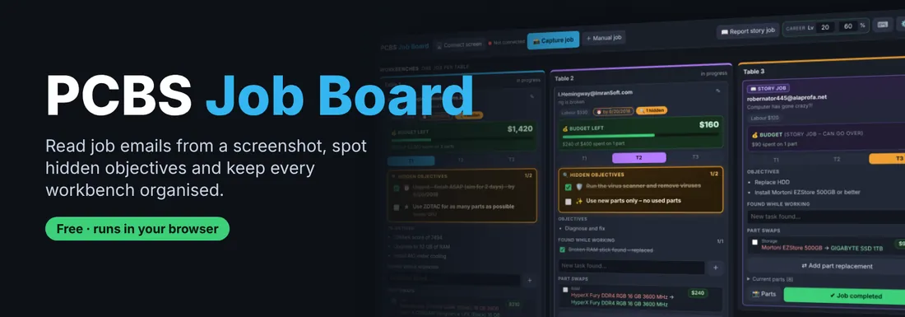
1. Set your career level
Enter your career level and % in the top bar, so suggestions only show parts you have unlocked. It updates by itself after your first capture. The badge next to it lists what every level unlocks – in the game and in this app.
2. Connect the game screen
Click 🖥️ Connect screen and choose the PCBS window (or the Remote Play / chiaki-ng window on console). You can also skip this and paste (Ctrl+V) or drop a screenshot instead. Once connected, the button turns into a small live preview – click it to change the screen, the red ■ next to it stops capturing.
3. Capture the job email
Open the job email in the game and click 📸 Capture job (＋ next to it adds a job by hand). On your very first capture a large window shows where the app found the email – adjust the box if needed and press Use this area. This is only needed once.
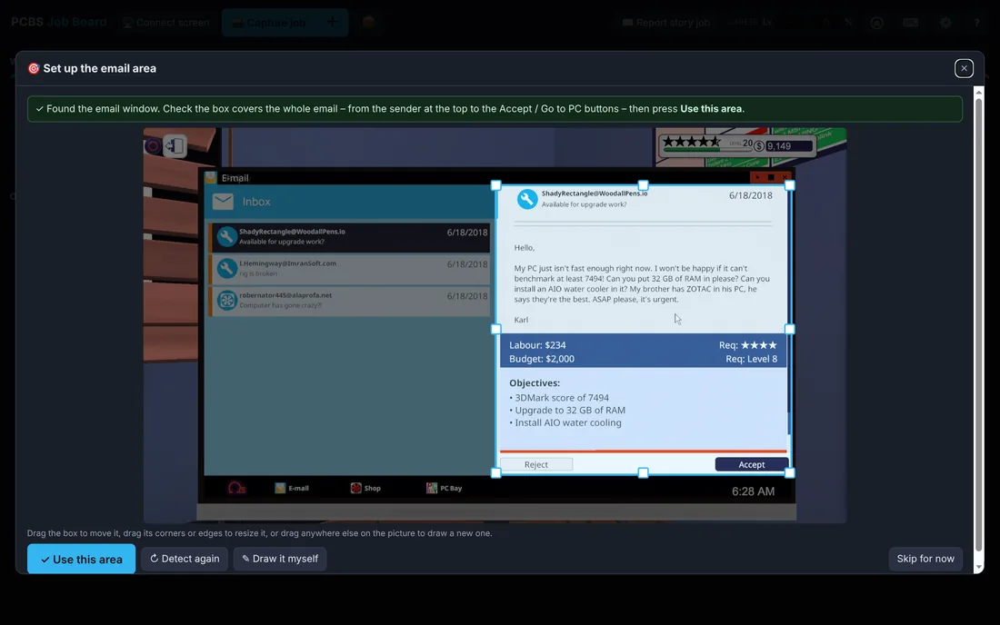
4. Check the new job
The new job window shows everything that was read. Fix anything that looks off, tick the hidden objectives you want to keep, then press Create job. Email too long for one screen? Scroll in the game and press 📸 Add email capture – the parts are joined.
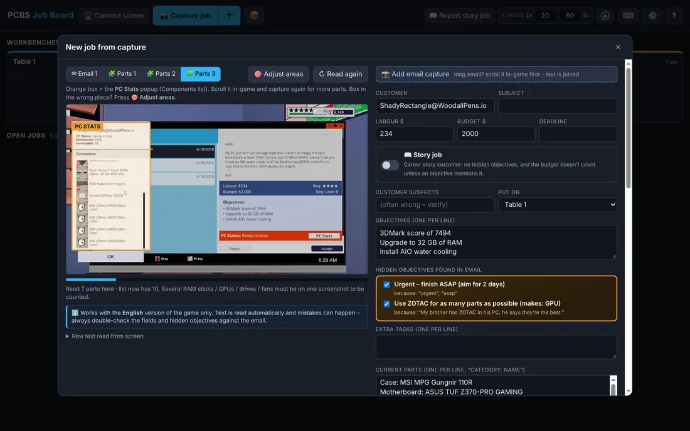
5. Add the customer's parts and pick swaps
When the PC is on your bench, open PC Stats in the game and press ✎ Edit on the job card, then 📸 Add PC parts capture (keyboard: select the job and press P – it does both). Take more screenshots if the list is long. Suggested swaps appear right away – only unlocked parts that fit the PC, cheapest first within budget. Tick the ones you want and they're added to the job.
For a 3DMark score objective you get whole part sets – XMP, more RAM sticks, a new or second GPU, a new CPU… – each with the score it reaches. One tick adds the whole set. It works for PCs built from nothing too.
6. Work the job
Put the job on a workbench (drag it, or press T1 / T2 / T3). Tick objectives as you go, add things you find while working, and use ⇄ Add part replacement to plan more swaps – start typing and pick from the list.
The Status row shows the budget, power, 3DMark score, overclock and whether the planned parts fit together – hover or tap a tile for details. The 💡 next to ✎ has tips for the job, like thermal paste, XMP or the leak test.
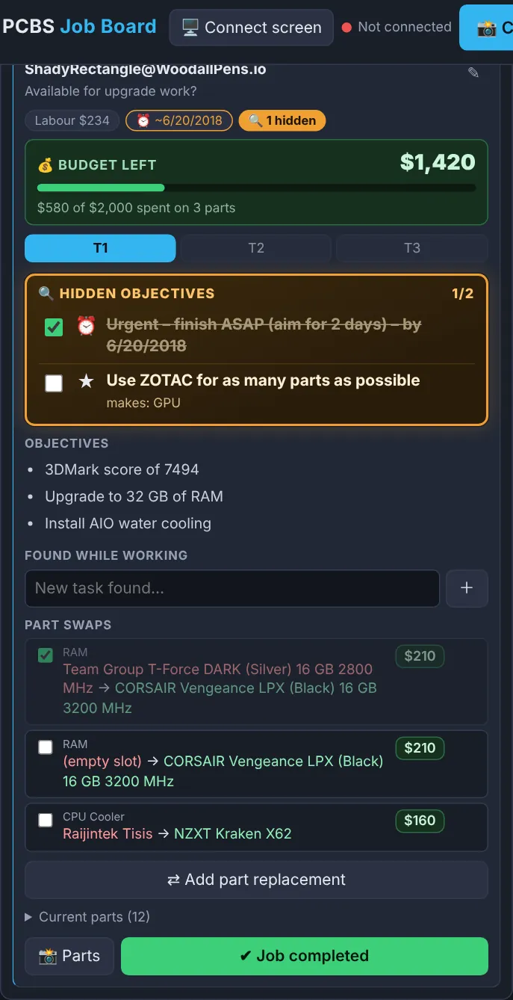
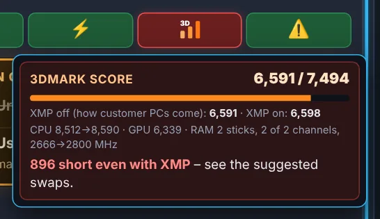
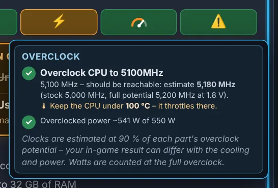
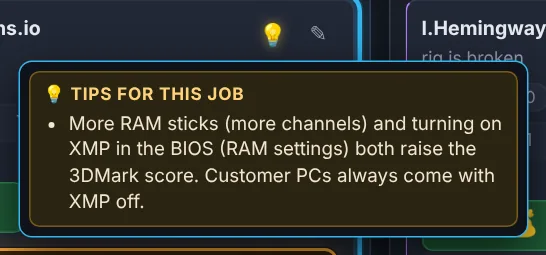
Now you can order parts, save, quit and come back tomorrow knowing exactly which part goes where.
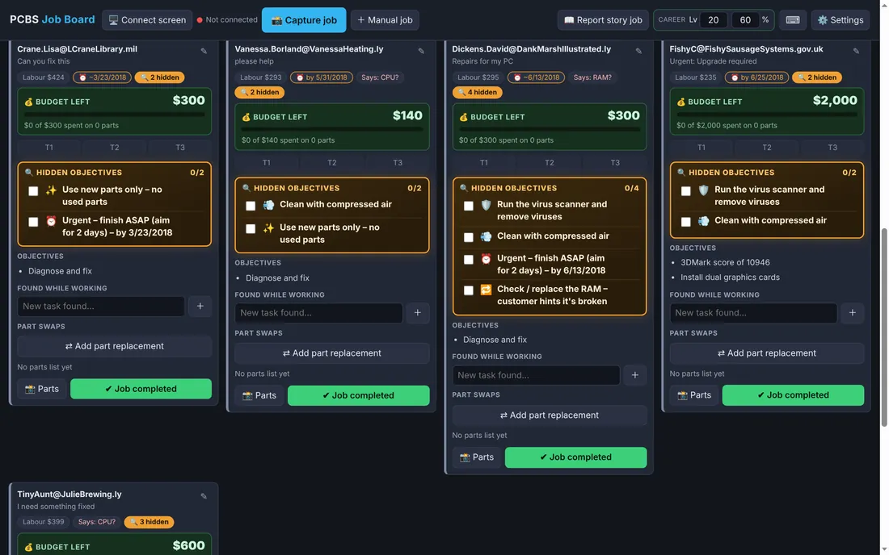
7. Finish
Press ✔ Job completed when the job is done.
📦 PC Bay builds (career level 9+)
Bought a broken PC on PC Bay? Click 📦 in the top bar. The build gets its own tile and can be saved and minimised at any time.
1. Parts – look at the PC in the game, open its Resale Value window and capture it. The parts and their values are read, and a part worth far less than it should be is marked as broken.
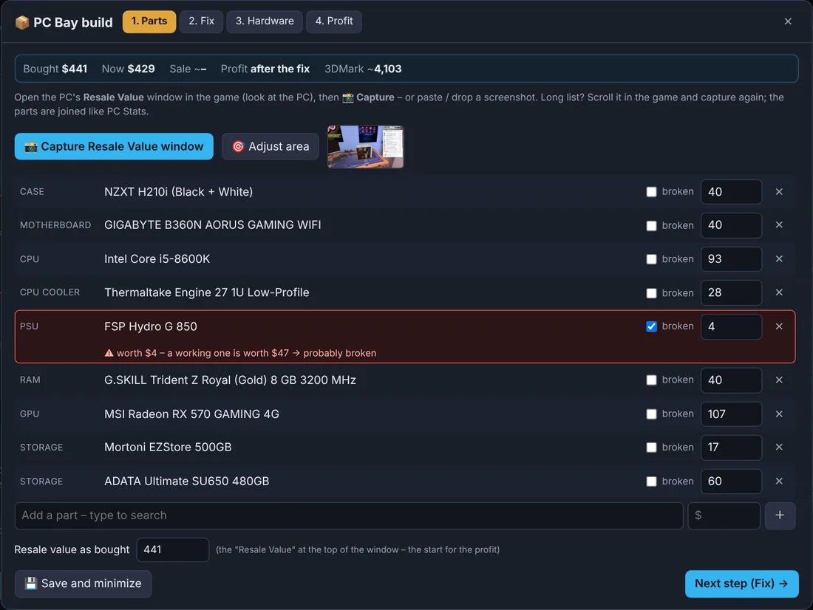
2. Fix – open your Inventory in the game, pick a category and capture it. Used, new and broken parts are read from the cards. Pick the replacement for the broken part – used parts are best, because a new part keeps only about a third of its price in the sale value.
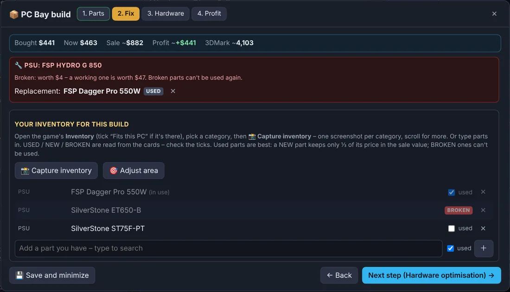
3. Hardware – capture more inventory categories (GPU, CPU, RAM…) to see which parts you already own raise the 3DMark score – and so the sale price – with the profit for each.
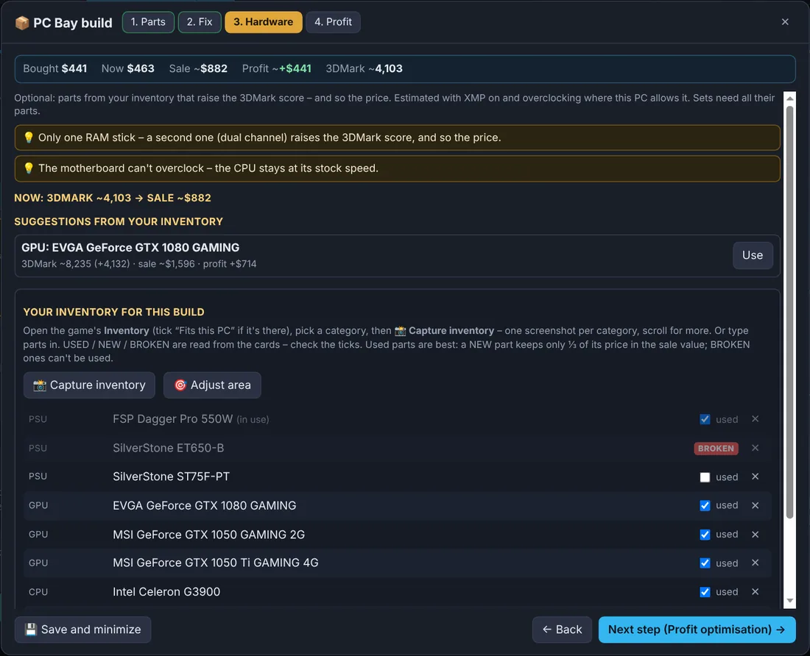
4. Profit – a short checklist in the right order: boot to the OS, XMP, overclocking, 3DMark – with the expected score and sale price. Press ✔ Finish build once it's sold.
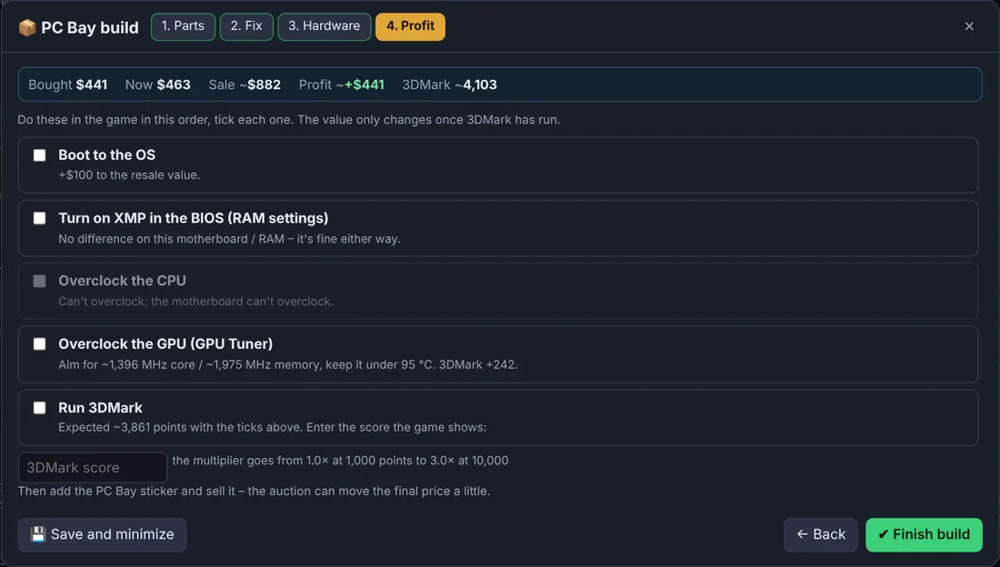
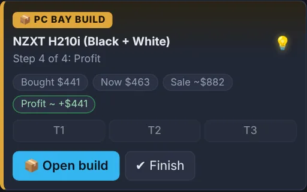
Tweak it
In ⚙️ Settings you'll find the hidden objective rules, screen areas, keyboard shortcuts, DLC & promo parts, game version, backup and reset.
Prefer the keyboard? Pick a job with the arrow keys, act on it with single keys (1 2 3, E, P, R, N, D…) or press Enter to go into the card; B opens the 📖 parts database. Press ? for the full list.
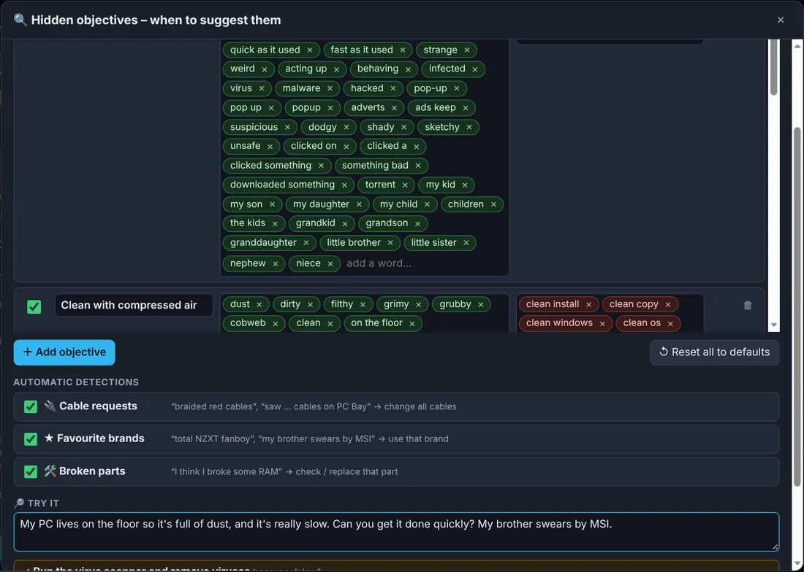
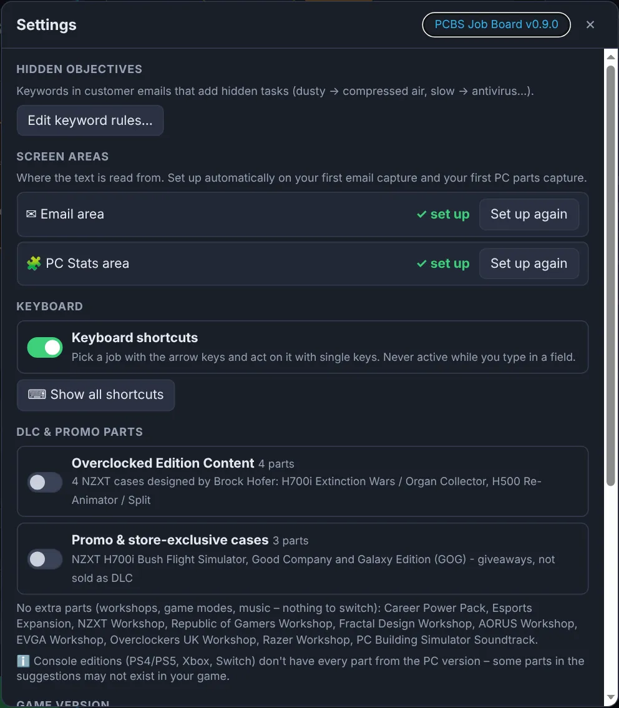
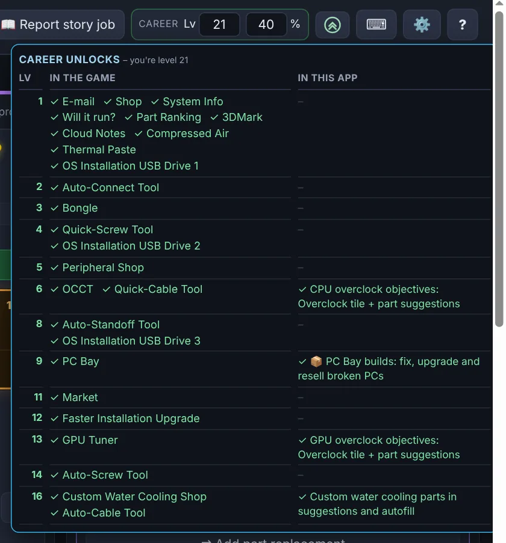
💡 Text reading is never 100% perfect – always give the new job a quick look before adding it.